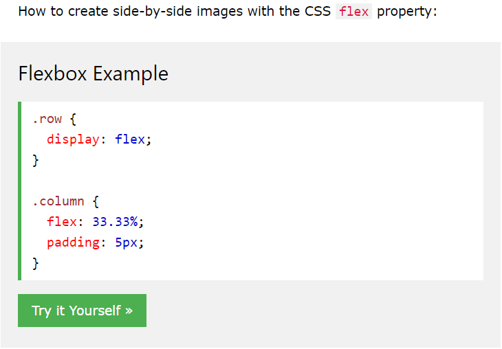
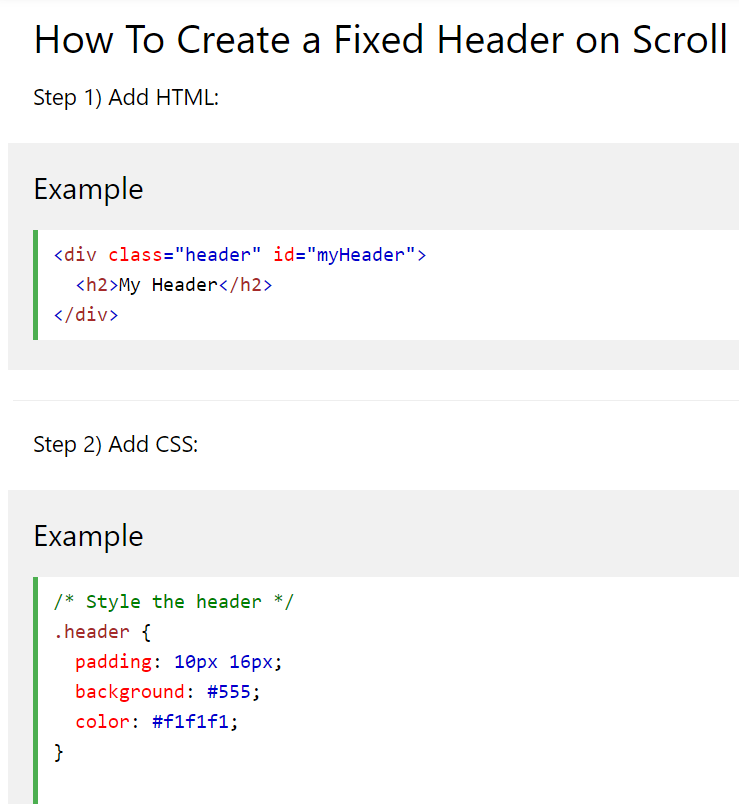

---

layout: home
---

<body>
<div class="wrapper">
    <h2><strong>My Portfolio Was Created By Using:</strong></h2>
    <br>
    <p>Minima theme by Gitlab pages. All code was not used and I changed some of the values and added my own code to make it more interesting.</p>
    <p>This was built by using Jekyll because it is very efficient when it comes to typing up each of my own pages as it pretty much does it for you.</p>
    <h3><strong>Sources</strong></h3>
    <ul>
        <li>W3Schools - Aligned Image Grid</li>
        <br>
        
        <br>
        <br>
        <li>W3Schools - Sticky Navigation</li>
        
    </ul>
</div>
</body>
